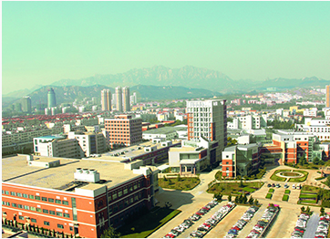
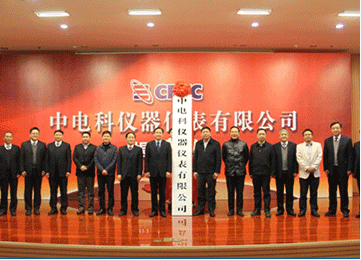
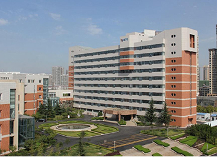
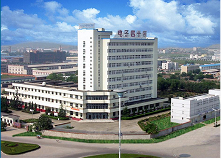

主页 > 关于我们 > 关于中电仪器 > 发展历程
发展历程
COMPANY HISTORY
发展历程
自1968年成立以来，中电仪器以振兴中国电子仪器事业为己任，克服重重困难，自强不息，艰苦创业，走出了一条自力自强、开拓进取的振兴中国电子仪器之路，谱
写出一曲曲追求卓越、勇攀高峰的壮丽凯歌。
   1968年成立于陕西凤县
1968年3月，在陕西凤县温江寺公社谷家庄南
家关兴建第1406研究所(超高频电子器件测试设备
研究所)，主要任务是负责研制测试超高频电真空和
微波半导体器件所需的测试设备、仪器、微波元件
等。四十一所诞生了。在三线艰苦条件下，四十一
所的开拓者们经历了十年的艰苦奋斗，先后完成了
十多项课题的研究，部分课题获得了全国科学大会
奖和电子工业部科技进步奖。
1982年整体搬迁于安徽蚌埠
通闭塞和自然灾害的侵袭，地处秦岭腹地的四
十一所面临着重重困难，科研生产停顿，职工生活
没有保障。1982年3月，经第四机械工业部批准，
四十一所开始成建制分期分批迁入安徽省蚌埠市。
经过近十年的努力，四十一所的创业者们克服了资
金短缺、场地狭窄的种种困难，边搬迁、边建设、
边科研、边生产，终于在淮河岸边建成我国唯一的
电子测量仪器研究所—华东电子测量仪器研究所。
1997年部分研究室搬至青岛
为了满足现代化建设的需要，经批准，1991
年，41所开始在山东青岛经技术开发区建设青岛分
部，实施微波/毫米波测试专业的重心转移。又是一
个从无到有，从小到大的创业历程，一座高科技的
电子测试仪器研发基地在黄海之滨建成。
2010年军工科研转移至青岛
为了加强军工科研力量，吸引高水平技术研发
人才，2010年 41所将军工科研全部转移至青岛，
设立八个研发部分别从事微波/毫米波测量、光通信
测量、数字通信测量、无线电通信测量、自动测试
系统集成、有源和无源微波部件等八个方向的产品
研发工作。
2013年40、41所一体化运营
2013年，中国电子科技集团公司为加快仪器产
业和相关元器件产业发展，加快集团公司内部资源
整合，加强优势互补，战略协同，提高在市场的竞
争力和核心技术能力，决定将41所和40所一体化运
营。
2015年中电科仪器仪表公司成立
2015年5月，中电科技仪器仪表公司在青岛成
立。中电仪器将作为新的起点，紧紧抓住大好发展
机遇，励精图治，再创辉煌。以仪器产业化为奋斗
目标，条件建设日新月异、智力结构不断升级、科
研成果推陈出新、产业结构规模空前。先后完成了
电子测试技术重点实验室、仪器工程中心等一批技
改项目，中电仪器将踏上新的征程。